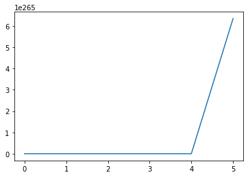

import numpy as np
import matplotlib.pyplot as plt
import EbayesThreshhttps://cran.r-project.org/web/packages/EbayesThresh/EbayesThresh.pdf
- R코드 Python화
- R코드 결과와 비교하면서
Import
Package 확인용 import
from scipy.stats import normbeta.cauchy
Given a value or vector x of values, find the value(s) of the function \(\beta(x) = g(x)/\phi(x) − 1\), where \(g\) is the convolution of the quasi-Cauchy with the normal density \(\phi(x)\).
x가 입력되면 코시 분포와 정규 분포를 혼합해서 함수 베타 구하기
beta.cauchy <- function(x) {
#
# Find the function beta for the mixed normal prior with Cauchy
# tails. It is assumed that the noise variance is equal to one.
#
phix <- dnorm(x)
j <- (x != 0)
beta <- x
beta[!j] <- -1/2
beta[j] <- (dnorm(0)/phix[j] - 1)/x[j]^2 - 1
return(beta)
}x = np.array([-2,1,0,-4,8,50])phix = norm.pdf(x)
phixarray([5.39909665e-02, 2.41970725e-01, 3.98942280e-01, 1.33830226e-04,
5.05227108e-15, 0.00000000e+00])- x의 확률밀도함수pdf 구하기
j = (x != 0)
jarray([ True, True, False, True, True, True])- 0이 아닌 인덱스만 얻기
beta = x
betaarray([-2, 1, 0, -4, 8, 50])beta = np.where(j == False, -1/2, beta)
betaarray([-2. , 1. , -0.5, -4. , 8. , 50. ])- j가 False 즉 0이면 -1/2를 넣고 아니면 beta값 그대로 넣기
beta[j] = (norm.pdf(0) / phix[j] - 1) / (x[j] ** 2) - 1
betaRuntimeWarning: divide by zero encountered in divide
beta[j] = (norm.pdf(0) / phix[j] - 1) / (x[j] ** 2) - 1array([ 5.97264025e-01, -3.51278729e-01, -5.00000000e-01, 1.85247374e+02,
1.23379625e+12, inf])- 0의 확률밀도함수pdf에서 x의 확률밀도함수phix로 나누어서 1을 빼고 그것을 x 중 0이 아닌 값들에 제곱한 값으로 나눠 1을 빼기
- \(\beta(x) = \begin{cases} x & \text{ if } x = 0 \\ \frac{\frac{\phi(0)}{\phi(x)}-1}{x^2} - 1 & \\ \text{ if } x \ne 0\end{cases}\)
결과
EbayesThresh.beta_cauchy(np.array([-2,1,0,-4,8,50]))/home/csy/Dropbox/sy_hub/posts/1_Note/EbayesThresh/utils.py:26: RuntimeWarning: divide by zero encountered in divide
beta[j] = (norm.pdf(0) / phix[j] - 1) / (x[j] ** 2) - 1array([ 5.97264025e-01, -3.51278729e-01, -5.00000000e-01, 1.85247374e+02,
1.23379625e+12, inf])plt.plot(EbayesThresh.beta_cauchy(np.array([-2,1,0,-4,8,50])))
beta.laplace
Given a single value or a vector of \(x\) and \(s\), find the value(s) of the function \(\beta(x; s, a) = \frac{g(x; s, a)}{f_n(x; 0, s)}−1\), where \(f_n(x; 0, s)\) is the normal density with mean \(0\) and standard deviation \(s\), and \(g\) is the convolution of the Laplace density with scale parameter a, \(γa(\mu)\), with the normal density \(f_n(x; µ, s)\) with mean mu and standard deviation \(s\).
평균이 \(\mu\)이며, 스케일 파라메터 a를 가진 라플라스와 정규분포의 합성함수 \(g\)와 평균이 0이고 표준편차가s인 f로 계산되는 함수 베타
EbayesThresh.beta_laplace(np.array([-2,1,0,-4,8,50]),s=1)array([ 8.89852030e-001, -3.80041717e-001, -5.61817772e-001,
2.85459467e+002, 1.02698062e+012, 6.34453954e+265])plt.plot(EbayesThresh.beta_laplace(np.array([-2,1,0,-4,8,50]),s=1))
for i in range(1,7):
print(EbayesThresh.beta_laplace(np.array([-2,1,0,-4,8,50]),s=i,a=1))[ 8.90821055e-001 -1.62658317e-001 -3.44320458e-001 1.11763852e+002
5.47362128e+010 1.26890791e+266]
[-3.97301589e-002 -1.29919250e-001 -1.57261541e-001 4.89966520e-001
1.72626254e+001 1.86200309e+115]
[-5.47817038e-02 -7.85266727e-02 -8.62291039e-02 5.07055851e-02
7.25566365e-01 1.35975389e+41]
[-4.17233012e-02 -5.04965878e-02 -5.33904683e-02 -5.20319315e-03
1.67493780e-01 2.44910886e+16]
[-3.07299814e-02 -3.46568340e-02 -3.59594764e-02 -1.47336507e-02
5.42137177e-02 1.68155326e+06]
[-2.30695463e-02 -2.50691640e-02 -2.57340346e-02 -1.49952854e-02
1.85602410e-02 1.12493577e+02]- R 결과 비교
[1] 0.890821055 -0.129919250 -0.086229104 -0.005203193 0.054213718 112.493576777Mad(Median Absolute Deviation)
중앙값 절대 편차, 분산이나 퍼진 정도 확인 가능
EbayesThresh.mad(np.array([1, 2, 3, 3, 4, 4, 4, 5, 5.5, 6, 6, 6.5, 7, 7, 7.5, 8, 9, 12, 52, 90]))2.9652wfromt
Given a value or vector of thresholds and sampling standard deviations (sd equals 1 for Cauchy prior), find the mixing weight for which this is(these are) the threshold(s) of the posterior median estimator. If a vector of threshold values is provided, the vector of corresponding weights is returned.
주어진 임계값과 표준편차에 대해, posterior median estimator에서 이 임계값이 나오도록 하는 혼합 가중치를 계산하는 함수가 제공된다.
EbayesThresh.wfromt(np.array([2,3,5]),prior='cachy')array([4.22963403e-01, 9.33799336e-02, 9.31590884e-05])wfromx
Suppose the vector \((x_1, \cdots, x_n)\) is such that \(x_i\) is drawn independently from a normal distribution with mean \(\theta_i\) and standard deviation \(s_i\) (\(s_i\) equals \(1\) for Cauchy prior). The prior distribution of the \(\theta_i\) is a mixture with probability \(1 − w\) of zero and probability \(w\) of a given symmetric heavy-tailed distribution. This routine finds the marginal maximum likelihood estimate of the parameter \(w\).
주어진 정규 분포 데이터에 대해 \(\theta_𝑖\)의 사전 분포가 주어진 상황에서, 모수 \(w\)의 최대우도 추정치를 계산하는 방법을 제공한다
s = np.array([0] * 90 + [5] * 10)
x = np.random.normal(0, s, size=100)EbayesThresh.wfromx(x, prior = "cauchy")0.08644292644513768isotone
Isotonic Regression은 입력 변수에 따른 출력 변수의 단조 증가(monotonic increasing) 또는 감소(monotonic decreasing) 패턴을 찾는 방법
beta = EbayesThresh.beta_cauchy(np.array([-2,1,0,-4]))
w = np.ones(len(beta))
aa = w + 1/beta
ps = w + aa
ww = 1/aa**2
wnew = EbayesThresh.isotone(ps, ww, increasing = False)
wnew[3.67430141208924,
-0.8467422493615953,
-0.8467422493615953,
-0.8467422493615953]wmonfromx
Given a vector of data, find the marginal maximum likelihood choice of weight sequence subject to the constraints that the weights are monotone decreasing
데이터에 대해 가중치 시퀀스를 선택하는 과정에서 조건이 주어지는데, 이 가중치 시퀀스는 각각의 가중치 값이 단조 감소해야 하며, 주어진 데이터에 대한 최대 우도를 갖도록 선택되어야 함.
s = np.array([0] * 30 + [5] * 10)
x = np.random.normal(0, s, size=40)EbayesThresh.wmonfromx(x, prior = "cauchy")array([0.16414571, 0.16414571, 0.16414571, 0.16414571, 0.16414571,
0.16414571, 0.16414571, 0.16414571, 0.16414571, 0.16414571,
0.16414571, 0.16414571, 0.16414571, 0.16414571, 0.16414571,
0.16414571, 0.16414571, 0.16414571, 0.16414571, 0.16414571,
0.16414571, 0.16414571, 0.16414571, 0.16414571, 0.16414571,
0.16414571, 0.16414571, 0.16414571, 0.16414571, 0.16414571,
0.16414571, 0.16414571, 0.16414571, 0.16414571, 0.16414571,
0.16414571, 0.16414571, 0.16414571, 0.16414571, 0.16414571])thresh
임계값 t를 이용해서 데이터 조정
EbayesThresh.threshold(np.array(range(-5,5)), t=1.4, hard=False)array([-3.6, -2.6, -1.6, -0.6, -0. , 0. , 0. , 0.6, 1.6, 2.6])negloglik.laplace
Marginal negative log likelihood function for laplace prior.
- 라플라스 프라이어에 대한 한계음의로그우도함수 계산
xpar = np.array([0.5,0.6,0.3])
xx = np.array([1,2,3,4,5])
ss = np.array([1])
tlo = np.sqrt(2 * np.log(len(np.array([1,2,3,4,5])))) * 1
thi = np.array([0,0,0])
a = xpar[1]EbayesThresh.negloglik_laplace(xpar, xx, ss, tlo, thi)-16.797273710172206postmean.cauchy
Find the posterior mean for the quasi-Cauchy prior with mixing weight w given data x, which may be a scalar or a vector.
- quasi-Cauch에 대한 사후 평균 구하기
EbayesThresh.postmean_cauchy(np.array([-2,1,0,-4,8,50]),0.5)array([ 0, 0, 0, -3, 7, 49])wpost.laplace
Calculate the posterior weight for non-zero effect
- 0이 아닌 효과에 대한 사후 가중치 계산
EbayesThresh.wpost_laplace(0.5,np.array([-2,1,0,-4,8,50]))array([0.65396152, 0.38270015, 0.30467782, 0.99652125, 1. ,
1. ])postmean.laplace
Find the posterior mean for the double exponential prior for given \(x, s (sd), w\), and \(a\).
- 이전 지수 분포에 대한 사후 평균
EbayesThresh.postmean_laplace(np.array([-2,1,0,-4,8,50]))array([-1.63431541, 0.56091461, 0. , -4.48434556, 8.5 ,
50.5 ])postmean
Given a single value or a vector of data and sampling standard deviations (sd equals 1 for Cauchy prior), find the corresponding posterior mean estimate(s) of the underlying signal value(s).
- 적절한 사후 평균 찾기
EbayesThresh.postmean(np.array([-2,1,0,-4,8,50]), s=1, w = 0.5, prior = "laplace", a = 0.5)array([-1.63431541, 0.56091461, 0. , -4.48434556, 8.5 ,
50.5 ])wandafromx
Given a vector of data and a single value or vector of sampling standard deviations, find the marginal maximum likelihood choice of both weight and scale factor under the Laplace prior
EbayesThresh.wandafromx(np.array([-2,1,0,-4,8,50])){'w': -1.491836784542754, 'a': 0.5}threshold
Given a data value or a vector of data, threshold the data at a specified value, using hard or soft thresholding
임계값 t를 이용하여 threshold하는 함수
threshld <- function(x, t, hard = TRUE) {
#
# threshold the data x using threshold t
# if hard=TRUE use hard thresholding
# if hard=FALSE use soft thresholding
if(hard) z <- x * (abs(x) >= t) else {
z <- sign(x) * pmax(0, abs(x) - t)
}
return(z)
}EbayesThresh.threshld(np.array([1,2,3,4,5]), 3, hard = True)array([0, 0, 3, 4, 5])vecbinsolv
vecbinsolv <- function(zf, fun, tlo, thi, nits = 30, ...) {
#
# Given a monotone function fun, and a vector of values
# zf find a vector of numbers t such that f(t) = zf.
# The solution is constrained to lie on the interval (tlo, thi)
#
# The function fun may be a vector of increasing functions
#
# Present version is inefficient because separate calculations
# are done for each element of z, and because bisections are done even
# if the solution is outside the range supplied
#
# It is important that fun should work for vector arguments.
# Additional arguments to fun can be passed through ...
#
# Works by successive bisection, carrying out nits harmonic bisections
# of the interval between tlo and thi
#
nz <- length(zf)
if(length(tlo)==1) tlo <- rep(tlo, nz)
if(length(tlo)!=nz)
stop(paste("Lower constraint has to be homogeneous",
"or has the same length as #functions."))
if(length(thi)==1) thi <- rep(thi, nz)
if(length(thi)!=nz)
stop(paste("Upper constraint has to be homogeneous",
"or has the same length as #functions."))
# carry out nits bisections
#
for(jj in (1:nits)) {
tmid <- (tlo + thi)/2
fmid <- fun(tmid, ...)
indt <- (fmid <= zf)
tlo[indt] <- tmid[indt]
thi[!indt] <- tmid[!indt]
}
tsol <- (tlo + thi)/2
return(tsol)
}tfromw
Given a single value or a vector of weights (i.e. prior probabilities that the parameter is nonzero) and sampling standard deviations (sd equals 1 for Cauchy prior), find the corresponding threshold(s) under the specified prior.
tfromw <- function(w, s = 1, prior = "laplace", bayesfac = FALSE, a = 0.5) {
#
# Given the vector of weights w and s (sd), find the threshold or
# vector of thresholds corresponding to these weights, under the
# specified prior.
# If bayesfac=TRUE the Bayes factor thresholds are found, otherwise
# the posterior median thresholds are found.
# If the Laplace prior is used, a gives the value of the inverse scale
# (i.e., rate) parameter
#
pr <- substring(prior, 1, 1)
if(bayesfac) {
z <- 1/w - 2
if(pr == "l"){
if(length(w)>=length(s)) {
zz <- z
} else { zz <- rep(z, length(s)) }
tt <- vecbinsolv(zz, beta.laplace, 0, 10, s = s, a = a)
}
if(pr == "c")
tt <- vecbinsolv(z, beta.cauchy, 0, 10)
}
else {
z <- 0
if(pr == "l"){
zz <- rep(0, max(length(s), length(w)))
# When x/s-s*a>25, laplace.threshzero has value
# close to 1/2; The boundary value of x can be
# treated as the upper bound for search.
tt <- vecbinsolv(zz, laplace.threshzero, 0, s*(25+s*a),
s = s, w = w, a = a)
}
if(pr == "c")
tt <- vecbinsolv(z, cauchy.threshzero, 0, 10, w = w)
}
return(tt)
}def tfromw(w, s=1, prior="laplace", bayesfac=False, a=0.5):
pr = prior[0:1]
if bayesfac:
z = 1/w - 2
if pr == "l":
if len(w) >= len(s):
zz = z
else:
zz = np.tile(z, len(s))
tt = vecbinsolv(zz, beta.laplace, 0, 10, s = s, a = a) ********************
elif pr == "c":
tt = vecbinsolv(z, beta.cauchy, 0, 10)
else:
z = 0
if pr == "l":
zz = [0] * max(len(s), len(w))
tt = vecbinsolv(zz, laplace.threshzero, 0, s*(25+s*a), s = s, w = w, a = a)
elif prior == "c":
tt = vecbinsolv(z, cauchy.threshzero, 0, 10, w = w)
return tttfromx
Given a vector of data and standard deviations (sd equals 1 for Cauchy prior), find the value or vector (heterogeneous sampling standard deviation with Laplace prior) of thresholds corresponding to the marginal maximum likelihood choice of weight.
데이터가 주어졌을때, 가중치의 한계 최대 우도로 임계값 찾는 함수
tfromx <- function (x, s = 1, prior = "laplace", bayesfac = FALSE, a = 0.5,
universalthresh = TRUE) {
#
# Given the data x, the prior, and any other parameters, find the
# threshold corresponding to the marginal maximum likelihood
# estimator of the mixing weight.
#
pr <- substring(prior, 1, 1)
if(pr == "c")
s = 1
if ( pr=="l" && is.na (a) ) {
wa <- wandafromx(x, s, universalthresh)
w <- wa$w
a <- wa$a
} else {
w <- wfromx(x, s, prior = prior, a = a)
}
return(tfromw(w, s, prior = prior, bayesfac = bayesfac, a = a))
}EbayesThresh.tfromx(x, s = 1, prior = "laplace", bayesfac = False, a = 0.5, universalthresh = True)